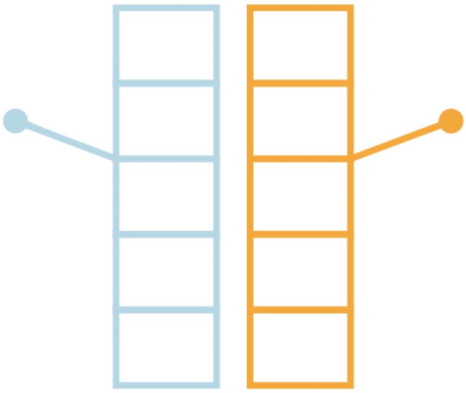
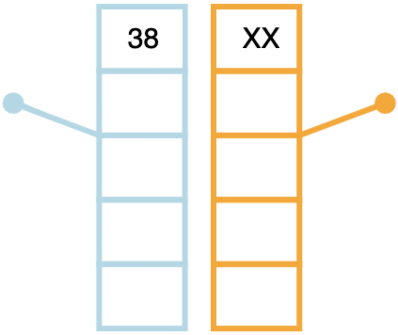
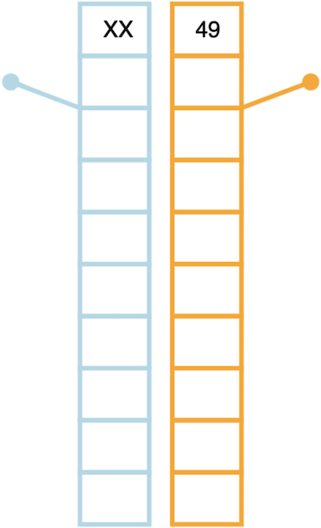
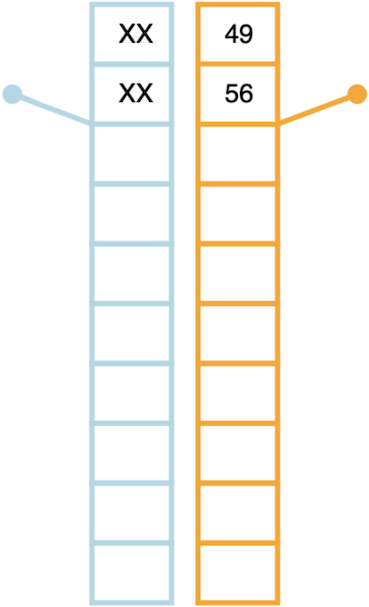
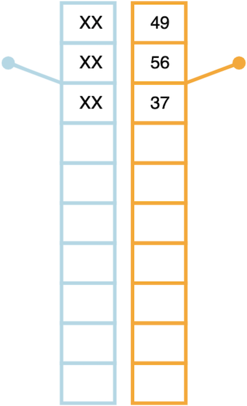
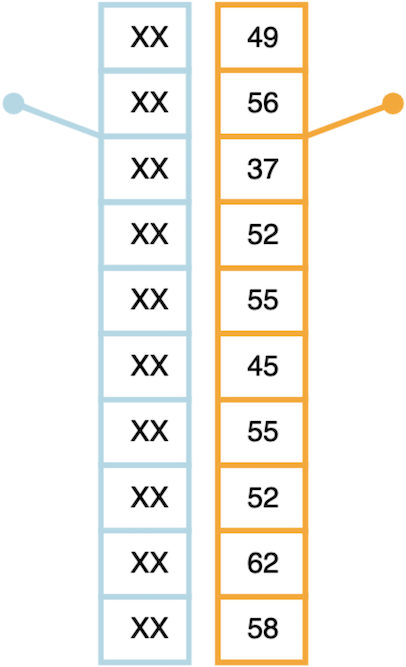
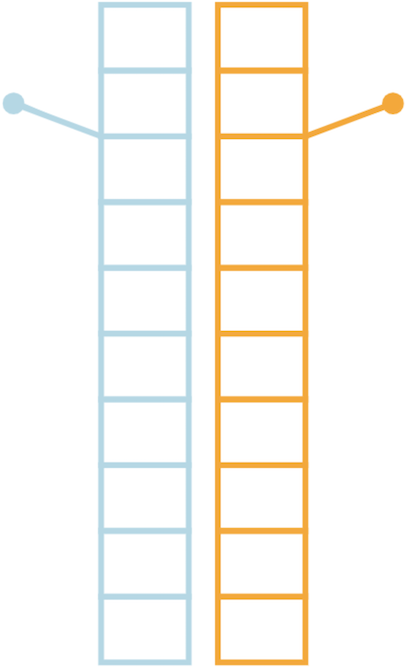
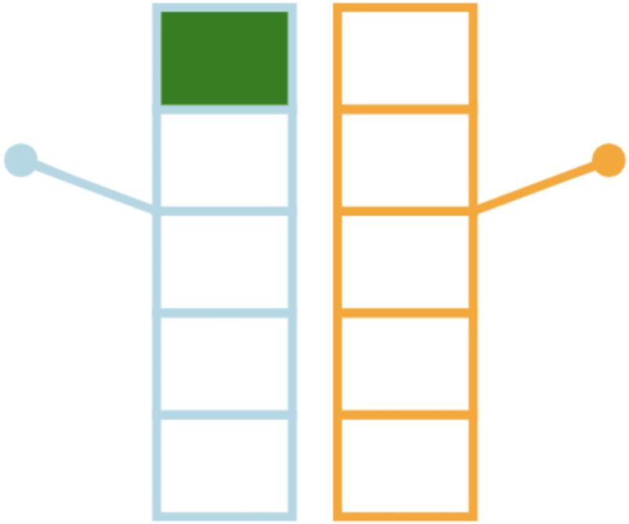
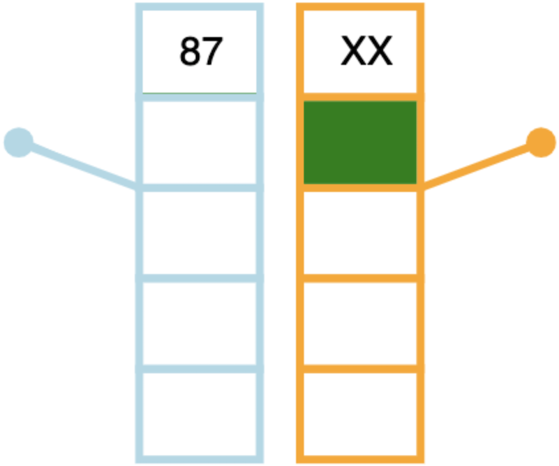
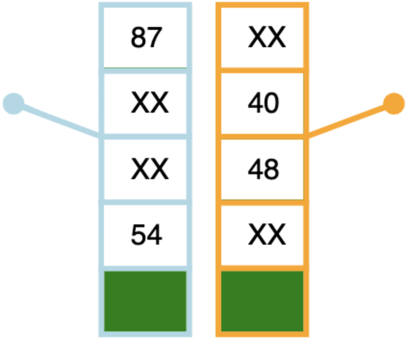

<!DOCTYPE html>
<html>
  <head>
    <title>Horizons Task</title>
    <script src="jspsych-6.1.0/jspsych.js"></script>
    <script src="jspsych-6.1.0/plugins/jspsych-html-keyboard-response.js"></script>
    <script src="jspsych-6.1.0/plugins/jspsych-instructions.js"></script>
    <script src="jspsych-6.1.0/plugins/jspsych-horizons-task.js"></script>
    <link href="jspsych-6.1.0/css/jspsych.css" rel="stylesheet" type="text/css"></link>
  </head>
  <body></body>
  <script>
    /* create timeline */
    var timeline = [];

    var games = []
    var messages = []

    function generate_games(){

        var forced_choices_two_two = [] // choices for a [2,2] game
        for (var i = 0; i < 3; i++) {
            forced_choices_two_two.push(['leftarrow', 'leftarrow', 'rightarrow', 'rightarrow']);
            forced_choices_two_two.push(['leftarrow', 'rightarrow', 'leftarrow', 'rightarrow']);
            forced_choices_two_two.push(['leftarrow', 'rightarrow', 'rightarrow', 'leftarrow']);
            forced_choices_two_two.push(['rightarrow', 'leftarrow', 'rightarrow', 'leftarrow']);
            forced_choices_two_two.push(['rightarrow', 'rightarrow', 'leftarrow', 'leftarrow']);
            forced_choices_two_two.push(['rightarrow', 'leftarrow', 'leftarrow', 'rightarrow']);
        }
        forced_choices_two_two.push(['leftarrow', 'rightarrow', 'leftarrow', 'rightarrow']);
        forced_choices_two_two.push(['rightarrow', 'leftarrow', 'leftarrow', 'rightarrow']);

        var forced_choices_three_one = [] // choices for a [3,1] and [1,3] game
        for (var i = 0; i < 2; i++) {
            forced_choices_three_one.push(['leftarrow', 'leftarrow', 'leftarrow', 'rightarrow']);
            forced_choices_three_one.push(['leftarrow', 'leftarrow', 'rightarrow', 'leftarrow']);
            forced_choices_three_one.push(['leftarrow', 'rightarrow', 'leftarrow', 'leftarrow']);
            forced_choices_three_one.push(['rightarrow', 'leftarrow', 'leftarrow', 'leftarrow']);
            forced_choices_three_one.push(['rightarrow', 'rightarrow', 'rightarrow', 'leftarrow']);
            forced_choices_three_one.push(['rightarrow', 'rightarrow', 'leftarrow', 'rightarrow']);
            forced_choices_three_one.push(['rightarrow', 'leftarrow', 'rightarrow', 'rightarrow']);
            forced_choices_three_one.push(['leftarrow', 'rightarrow', 'rightarrow', 'rightarrow']);
        }
        forced_choices_three_one.push(['leftarrow', 'leftarrow', 'rightarrow', 'leftarrow']);
        forced_choices_three_one.push(['rightarrow', 'leftarrow', 'leftarrow', 'leftarrow']);
        forced_choices_three_one.push(['rightarrow', 'rightarrow', 'leftarrow', 'rightarrow']);
        forced_choices_three_one.push(['leftarrow', 'rightarrow', 'rightarrow', 'rightarrow']);

        var colors = [];
        for (var i = 0; i < 10; i++) {
            colors.push(["orange", "lightblue"]);
            colors.push(["lightblue", "orange"]);
        }

        var means = [
            [40, 10], [40, 20], [40, 28], [40, 32], [40, 36],
            [40, 44], [40, 48], [40, 52], [40, 60], [40, 70],
            [60, 30], [60, 40], [60, 48], [60, 52], [60, 56],
            [60, 64], [60, 68], [60, 72], [60, 80], [60, 90]
        ]

        for (var i = 0; i < 20; i++) {
            game_h1_two_two = {
                type: "horizons-task",
                horizon: 5,
                colors: function(){
                    return jsPsych.randomization.sampleWithoutReplacement(colors, 1)[0];
                },
                means: function(){
                    return jsPsych.randomization.sampleWithoutReplacement(means, 1)[0];
                },
                forced_choices: function(){
                    return jsPsych.randomization.sampleWithoutReplacement(forced_choices_two_two, 1)[0];
                },
                data: {test_part: "live"}
            }

            game_h6_two_two = {
                type: "horizons-task",
                horizon: 10,
                colors: function(){
                    return jsPsych.randomization.sampleWithoutReplacement(colors, 1)[0];
                },
                means: function(){
                    return jsPsych.randomization.sampleWithoutReplacement(means, 1)[0];
                },
                forced_choices: function(){
                    return jsPsych.randomization.sampleWithoutReplacement(forced_choices_two_two, 1)[0];
                },
                data: {test_part: "live"}
            }

            game_h1_three_one = {
                type: "horizons-task",
                horizon: 5,
                colors: function(){
                    return jsPsych.randomization.sampleWithoutReplacement(colors, 1)[0];
                },
                means: function(){
                    return jsPsych.randomization.sampleWithoutReplacement(means, 1)[0];
                },
                forced_choices: function(){
                    return jsPsych.randomization.sampleWithoutReplacement(forced_choices_three_one, 1)[0];
                },
                data: {test_part: "live"}
            }

            game_h6_three_one = {
                type: "horizons-task",
                horizon: 10,
                colors: function(){
                    return jsPsych.randomization.sampleWithoutReplacement(colors, 1)[0];
                },
                means: function(){
                    return jsPsych.randomization.sampleWithoutReplacement(means, 1)[0];
                },
                forced_choices: function(){
                    return jsPsych.randomization.sampleWithoutReplacement(forced_choices_three_one, 1)[0];
                },
                data: {test_part: "live"}
            }

            games.push(game_h1_two_two);
            games.push(game_h6_two_two);
            games.push(game_h1_three_one);
            games.push(game_h6_three_one);
        }
    }

    function generate_end_message(){
        for (var i = 0; i < 80; i++) {
            var end_message = {
                type: "html-keyboard-response",
                stimulus: "End of game " + Number(i + 1) + ". Press any key to proceed",
                choices: jsPsych.ALL_KEYS
            }
            messages.push(end_message)
        }
    }
    
    // generate all games before the participant enters the experiment
    generate_games();
    games = jsPsych.randomization.shuffle(games);
    generate_end_message();

    // define instructions
    var instr1 = {
        type: 'instructions',
        pages: [
            "Welcome! Thank you for volunteering for this experiment. Use the right arrow key to move forward through these instructions.",        
            "This is a paid experiment. You will play a gambling game and the amount we pay you (up to $%d) will be based on your performance. " 
                + "Please read through this instruction carefully.",
            "In this experiment you will do two things.  First you will play a gambling task in which you will make choices between two options. " 
                + "This will take about 30 minutes.  Next you will fill in a personality questionnaire.  This will take about 10 minutes.  When you're done "
                + "please return to the main lab for debriefing.",
            "In this experiment - the gambling task - we would like you to choose between two one-armed bandits of the sort you might find in a casino.",
            "The one-armed bandits will be represented like this:<p></img></p>",
            "Every time you choose to play a particular bandit, the lever will be pulled like this ...<p></img></p>",
            "... and the payoff will be shown like this. For example, in this case, the left bandit has been played and is paying out 38 points."
                + "<p></img></p>",
            "The points you earn by playing the bandits will be converted into REAL money at the end of the experiment, so the more points you get, "
                + "the more money you will earn.",
            "The points you earn by playing the bandits will be converted into a reward of time during the experiment, so the more points you get, "
                + "the faster you will get out of this room and get your credits.",
            "Your goal is to maximize the points you get through out the task. Try your best to get as many points as you can!",
            "During one game, each bandit tends to pay out about the same amount of reward on average, but there is variability in the reward on any given play.",
            "For example, the average reward for the bandit on the right might be 50 points, but on the first play we might see a reward of 49 points because of "
                + "the variability...<p></img></p>",
            "... on the second play we might get 56 points ...<p></img></p>",
            "... if we open a third box on the right we might get 37 points this time ...<p></img></p>",
            "... and so on, such that if we were to play the right bandit 10 times in a row we might see these rewards ...<p></img></p>",
            "Both bandits will have the same kind of variability and this variability will stay constant throughout the experiment.",
            "During one game, one of the bandits will always have a higher average reward and hence is the better option to choose on average.",
            "On any trial you can only choose to play one of the two bandits and the number of trials in each game is determined by the height of the bandits. "
                + "For example, when the bandits are 10 boxes high, there are 10 trials in that game ...<p></img></p>",
            "... when the stacks are 5 boxes high there are only 5 trials in the game<p></img></p>",
            "The first 4 trials in each game are instructed trials. These instructed trials will be indicated by a green square inside the box we want you to open. "
                + "You MUST press the button to choose this option. For example, if you are instructed to choose the left box on the first trial, "
                + "you will see this:<p></img></p>",
            "If you are instructed to choose the right box on the second trial, you will see this:<p></img></p>",
            "Once these instructed trials are complete, you will have a free choice between the two stacks that is indicated by two green squares inside the two "
                + "boxes you are choosing between.<p></img></p>",
            "So ... to be sure that everything makes sense let's work through a few example games ..."
                + "<p>Press the <strong>left arrow</strong> to play the left bandit</p><p>Press the <strong>right arrow</strong> to play the right bandit</p>",
        ],
        show_clickable_nav: false
    }
    timeline.push(instr1)

    // demo games
    var demo1 = {
        type: "horizons-task",
        horizon: 10,
        colors: ["lightblue", "orange"],
        means: [60, 70],
        forced_choices: ['leftarrow', 'leftarrow', 'rightarrow', 'rightarrow'],
        data: {test_part: "demo"}
    }

    var demo_message = {
        type: "html-keyboard-response",
        stimulus: "End of demo game. Press any key to proceed",
        choices: jsPsych.ALL_KEYS
    }

    var demo2 = {
        type: "horizons-task",
        horizon: 5,
        colors: ["orange", "lightblue"],
        means: [40, 20],
        forced_choices: ['rightarrow', 'leftarrow', 'rightarrow', 'rightarrow'],
        data: {test_part: "demo"}
    }
    
    timeline.push(demo1)
    timeline.push(demo_message)
    timeline.push(demo2)
    timeline.push(demo_message)

    // finish instructions
    var instr2 = {
        type: "instructions",
        pages: [
            "Great job! Now you know the rule!",
            "Just to repeat, to make your choice:<p>Press the <strong>left arrow</strong> to play the left bandit</p><p>Press the <strong>right arrow</strong> "
                + "to play the right bandit</p>",
            "We want to see how well a human being can do in this task, try your best to get as many points as you can!"
        ],
        show_clickable_nav: false
    }
    timeline.push(instr2)

    var begin = {
        type: "html-keyboard-response",
        stimulus: "Press space when you are ready to begin. Good luck!",
        choices: ['space']
    }
    timeline.push(begin)
    
    // push games onto timeline
    for (var i = 0; i < 80; i++){
        timeline.push(games[i])
        timeline.push(messages[i])
    }

    var end = {
        type: "html-keyboard-response",
        stimulus: 
        function() {
            var trials = jsPsych.data.get().filter({test_part: 'live'});
            var points = trials.select("points_earned").sum();

            return "<p>Thanks for participating! You earned " + points + " points across the 80 games." 
                + "<p>Press any key to finish the experiment.</p>"
            }
    }
    timeline.push(end);

    // start the experiment
    jsPsych.init({
        timeline: timeline,
        show_progress_bar: true,
        on_finish: function() {
            jsPsych.data.displayData();
        }
    });

  </script>
</html>
